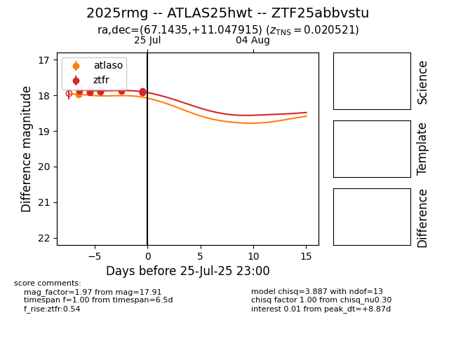

Target 2025rmg at 2025-08-06 17:27, see:
FINK: fink-portal.org/2025rmg
Lasair: lasair-ztf.lsst.ac.uk/objects/2025rmg
ALeRCE: alerce.online/object/2025rmg
TNS: wis-tns.org/object/2025rmg
YSE: ziggy.ucolick.org/yse/transient_detail/2025rmg
alt names
ZTF25abbvstu (ztf,fink)
2025rmg (tns,yse)
ATLAS25hwt (atlas)
coordinates:
equatorial (ra, dec) = (67.1435,+11.04792)
galactic (l, b) = (184.4799,-24.99492)
photometry
last atlaso=18.05, ztfr=18.04
2 atlaso, 17 ztfr detections
